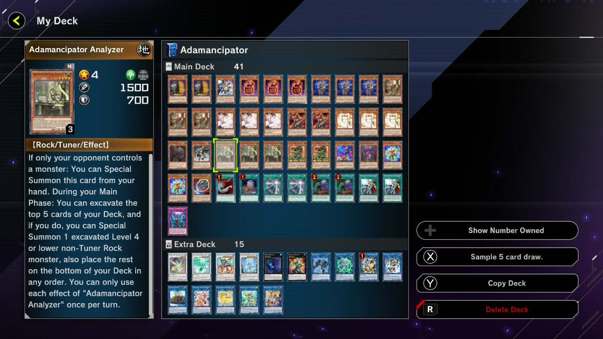

Decks
Here I'll provide a deck for you to try.
Adamancipator

This deck focus on special summoning rock type monsters from the deck.
It is very luck based, but also makes it very interesting.
Some Important Key Cards
Main Deck
- Adamancipator Researcher
- Adamancipator Seeker
- Adamancipator Analyzer
- Key cards of Adamancipator deck that can special summon rock monsters from deck.
- Koa'ki Meiru Guardian
- Powerful Rock monsters. Can protect your combo when on the field.
- Block Dragon
- Best card in a rock deck. Can search 3 monsters from deck, which can help you search monsters for next turn, or monsters to further build your board.
- Foolish Burial
- Powerful support card. Can either send Block Dragon or Lost Dragon to grave for follow up plays.
- Miracle Rupture
- Can send Revival Golem to grave for follow up, Xenoguitar to reuse resource from grave, or Tackle Crusader to destroy opponents' continuous traps.
Extra Deck
- Borreload Savage Dragon
- Adamancipator Risen - Dragite
- Apollousa, Bow of the Goddess
- Boss monsters of the deck. You would definitely want to see them on board when your turn ends.
- Gallant Granite
- Union Carrier
- Link Spider
- Secure Gardna
- Cards that help bring Block Dragon out from the deck, which is very important in this deck.
- Accesscode Talker
- The card that you want to summon to end the game. Can wipe your opponents' board and deal a lot of damage.